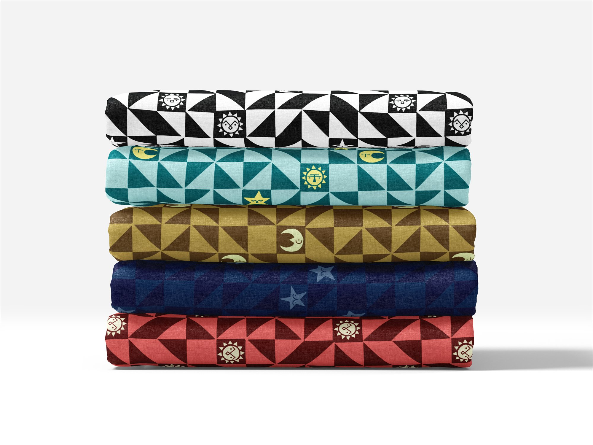
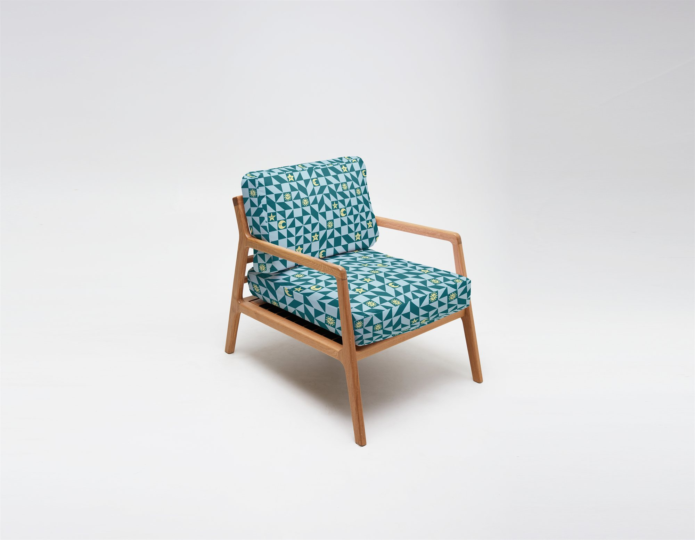
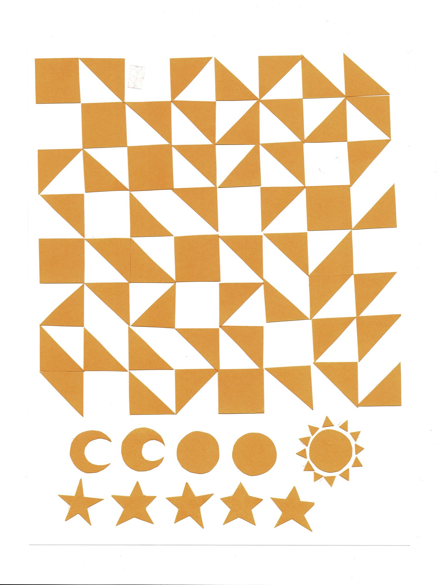
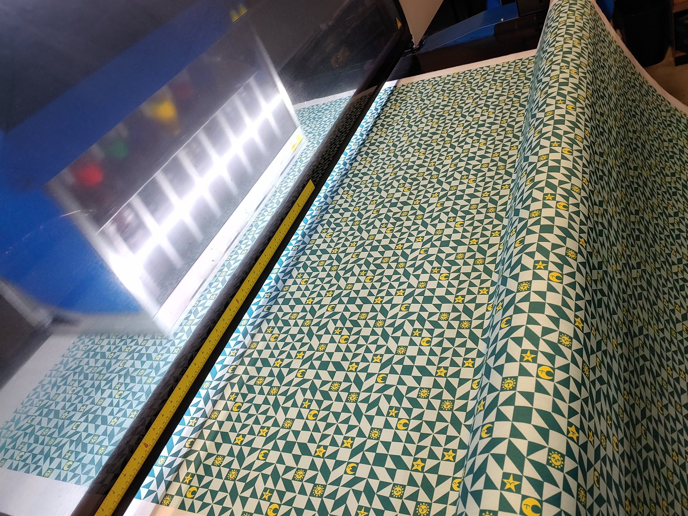
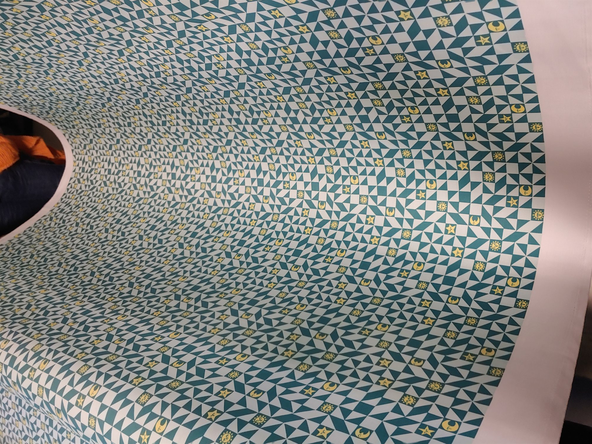
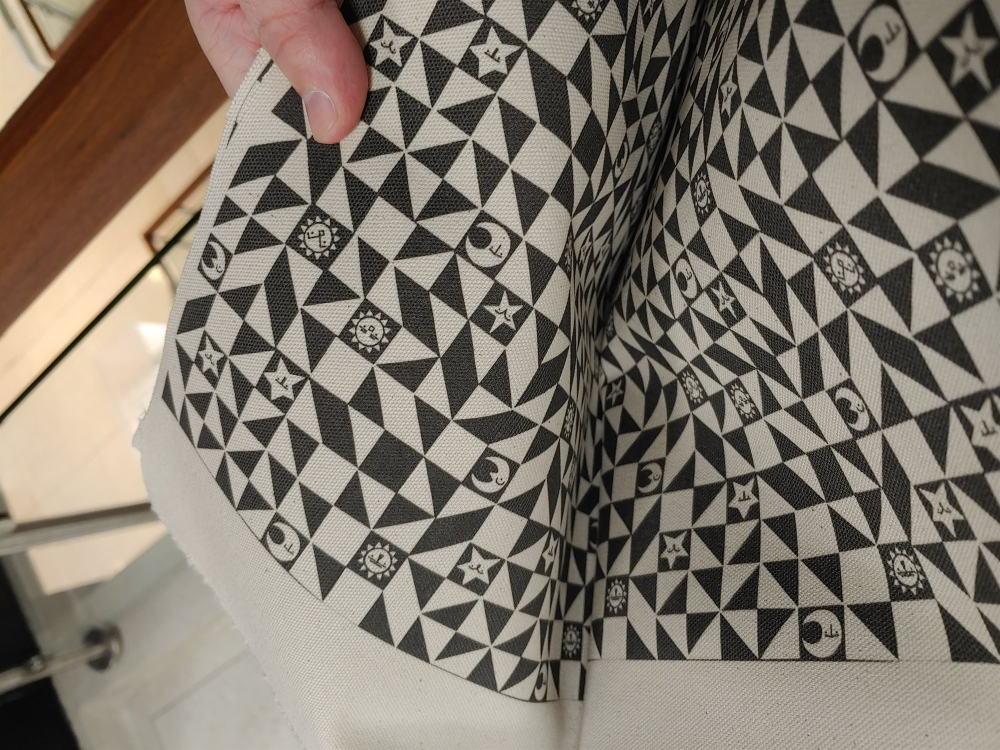

Fabric Design
Ever had a bad day and wanted the sky to reflect that? These fabric prints were created with shapes cut out of paper. Each features some combination of celestial bodies who don't seem very pleased to be there.

Overview
Some fabric I designed using cut out pieces of paper. I had it professionally printed, and it's just waiting for the perfect project.





Next project
Brass Type Cabinet →